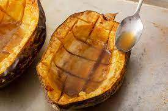

Baked Acorn Squash with Butter and Brown Sugar

Prep Time: 10 minutes Cook Time: 75 minutes Servings: 2 to 4
Ingredients
- 1 acorn squash
- 1 TBSP butter
- 2 TBSP brown sugar
- 2 TSP maple syrup
- dash of salt
Instructions
- Preheat over to 400 degrees F
- Prepare the squash.
- Microwave the squash for a minute each, to make it easier to cut.
- Using a sharp chefs knife, carefully cut the squash in half, from tip to stem.
- Use a sturdy metal spoon to scrape out the seeds and stringy bits inside each squash half, until the inside is smooth.
- Score the insides of the squash halfs in a cross-hatch pattern, to about a half inch in depth.
- Place the acorn halves cut side up in a roasting pan. Pour 1/4 inch water over the bottom of the pan so that the squash doesn't get dried out in the oven.
- Rub a half TBSP of butter into the insides of each half. Sprinkle with a little salt if using unsalted butter
- Crumble 1 TBSP brown sugar into the center of each half and drizzle with a TSP of maple syrup.
- Bake at 400F for about 60-75 minutes, until the tops of the squash halves are nicely browned, and the squash flesh is very soft and cooked through.
- Once removed from oven, spoon brown sugar butter sauce over the squash.